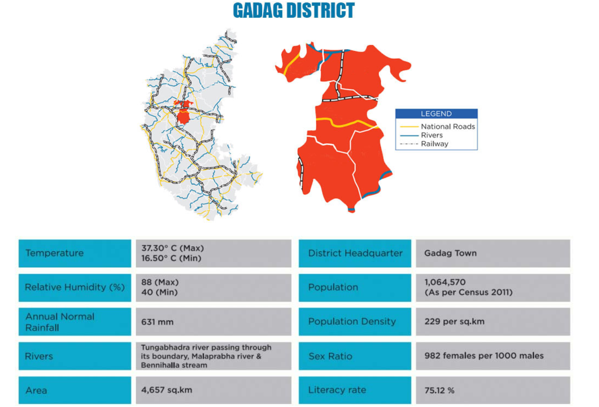

On 24th August, 1997, ‘Gadag’ emerged as a new district. In the fields of art, litreture, culture, spiritual and industry, Gadag has its own heritage since long back. It is also a tourist place with greenary and being visited by many nature-lovers. In the north border flows Malaprabha and in Southern border Tungabhadra. Other than these Bennehall joins Malaprabha near Ron. Throughout the district, black soil is prominent but red soil with sand is also there in some parts. It has moderate temprature weather is pleasant and healthy. The maximum temperature is upto 42 degree centigrade in the month of April and May and minimum degree of 16 centigrade in some months.
Gadag is a city in Karnataka state in India. It is the administrative headquarters of Gadag District. Gadag and its sister city Betageri have a combined city administration. Gadag immediately brings to mind the name of Narayanappa, popularly known as Kumaravyasa, the author of Karnata Bharata Kathamanjari. It is the classic Mahabharata in Kannada. Narayanappa was born in the nearby village of Koliwada. He composed his work sitting before Lord Veera Narayana, his chosen deity. The temples of Veera Narayana and Trikuteshwara are places of religious and historic importance. The blind singer Pand.Ganayogi Panchakshari Gawayi belonged to Gadag. His music school (Veereshwara Punyashrama) is famous. The Tontadarya Matha of the Veerashaiva sect of Hinduism is engaged in many educational and literary activities in and around Gadag.
There is a legend about Gadag that if you throw a stone in town it would either land at a printing press or on a handloom. Gadag has a lot of printing presses including the Hombali Brothers and the Shabadi Math Printing Press. Betageri, which is an adjacent town to Gadag, is famous for handlooms. Gadag has been a important seat of Hindustani music in north Karnataka, and is home to the Hindustani singer Bharata Ratna awardee Pandit Bhimsen Joshi.The modern Kannada literature and a freedom fighter Shri.Huilgol Narayan Rao, Pandit Puttaraj Gawai One of Gem from Hindustani classical tradition and our well known cricketer Sunil Joshi.
Roads are one of the basic means of transport which requires to be developed in the district. All indicators pertaining to road in the district are below the state average. Length of different categories of road in the district is as detailed below: